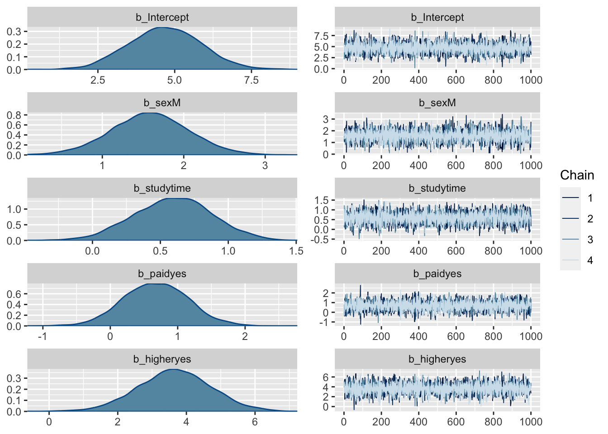
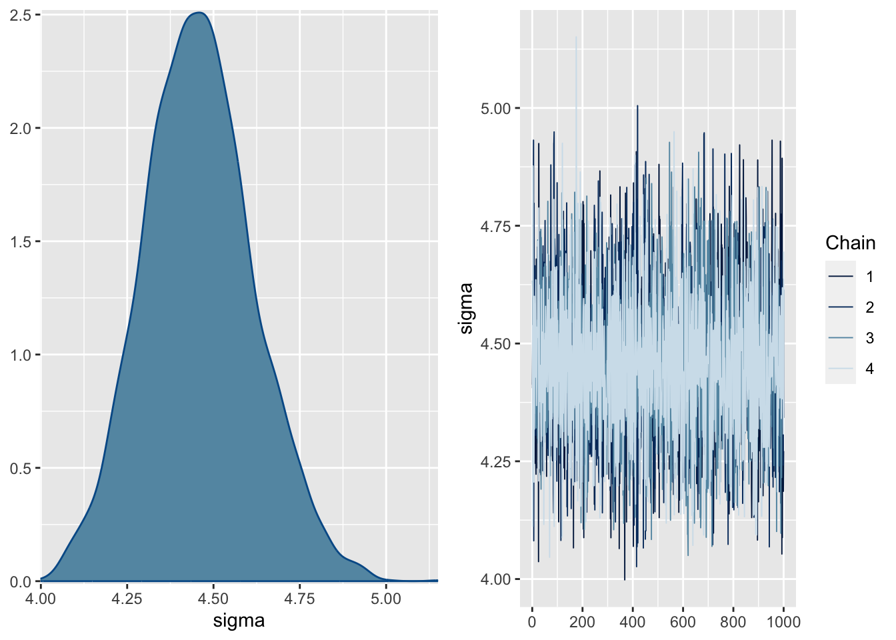
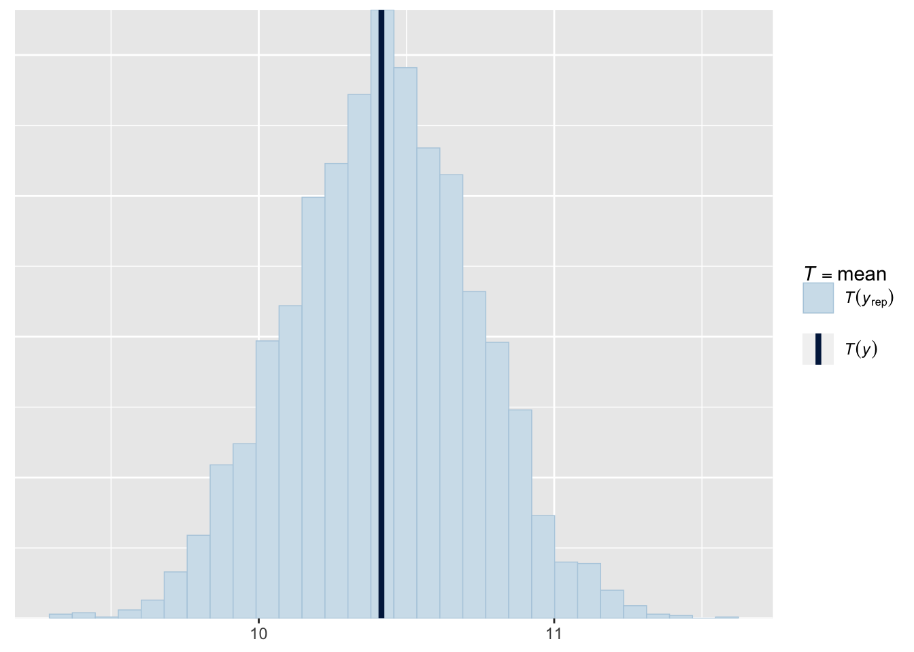
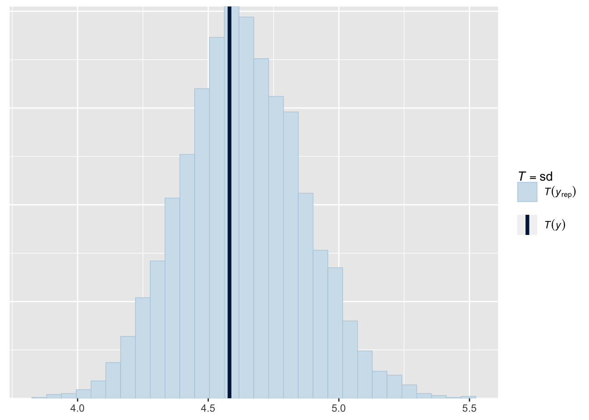
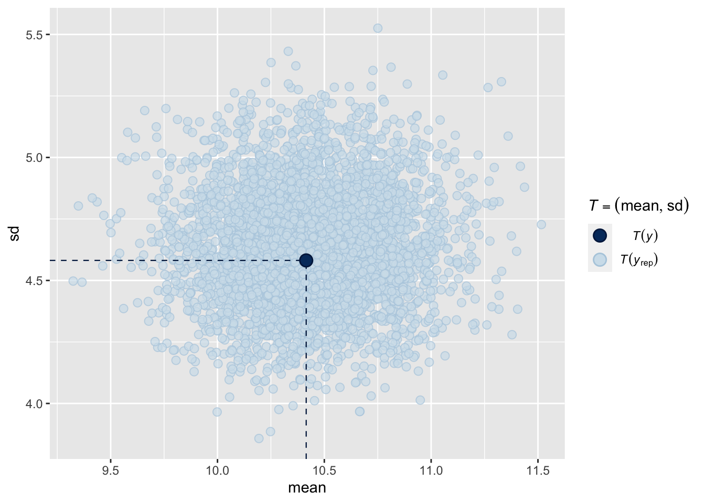
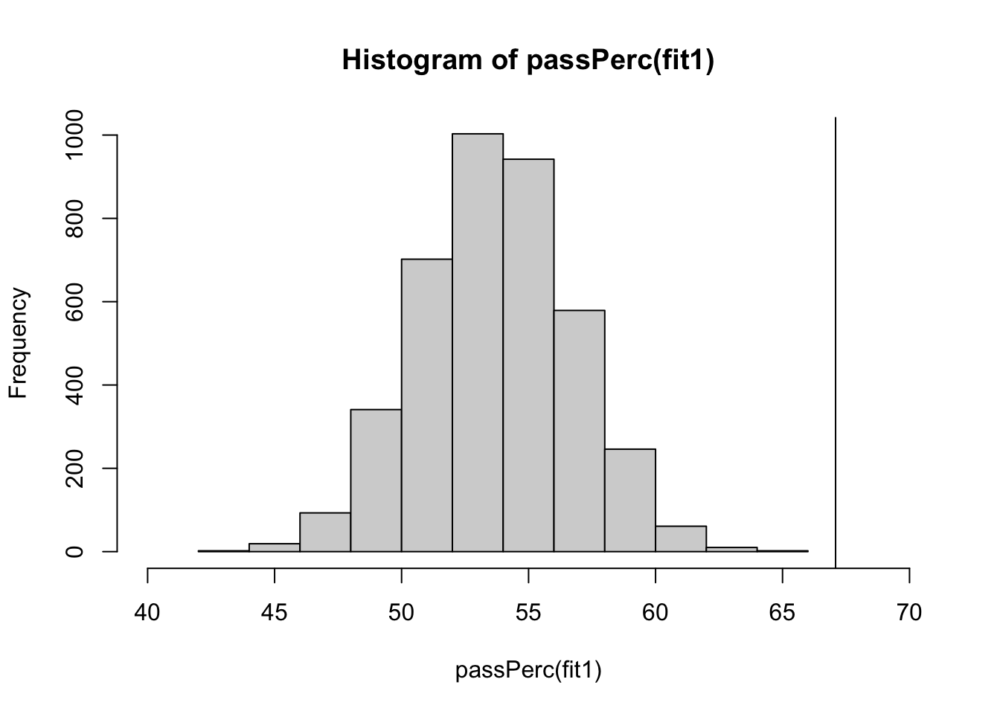
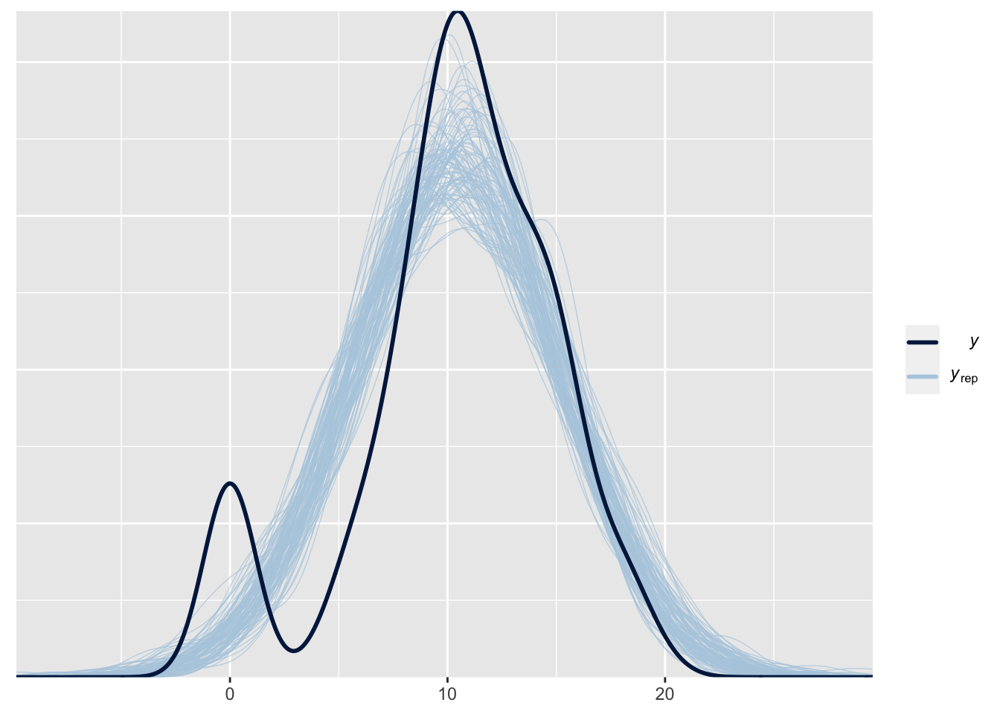
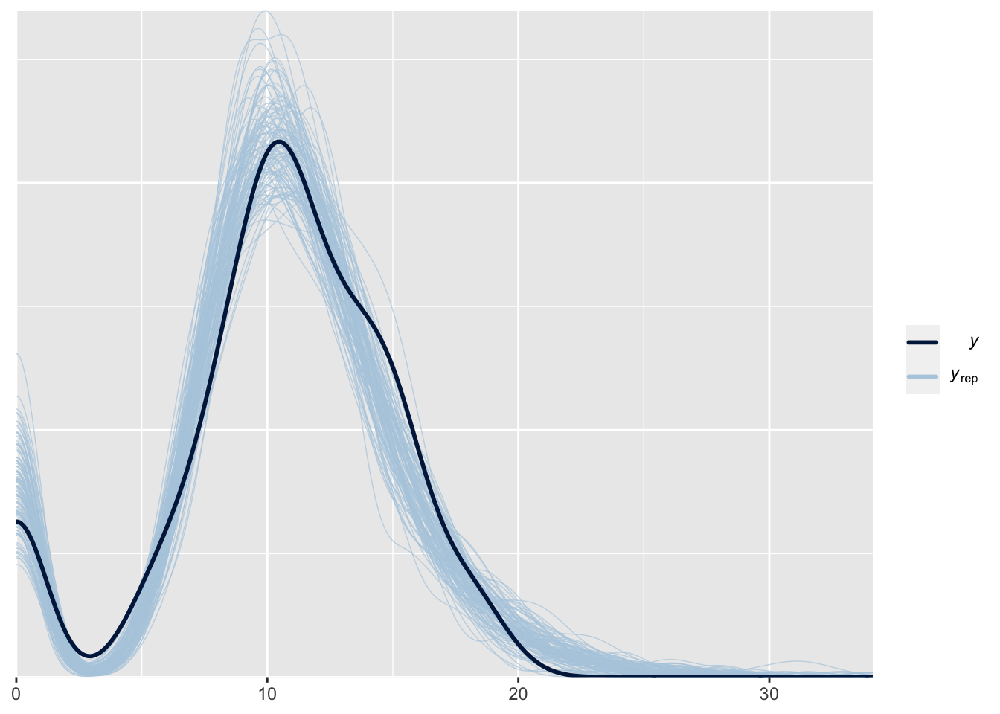
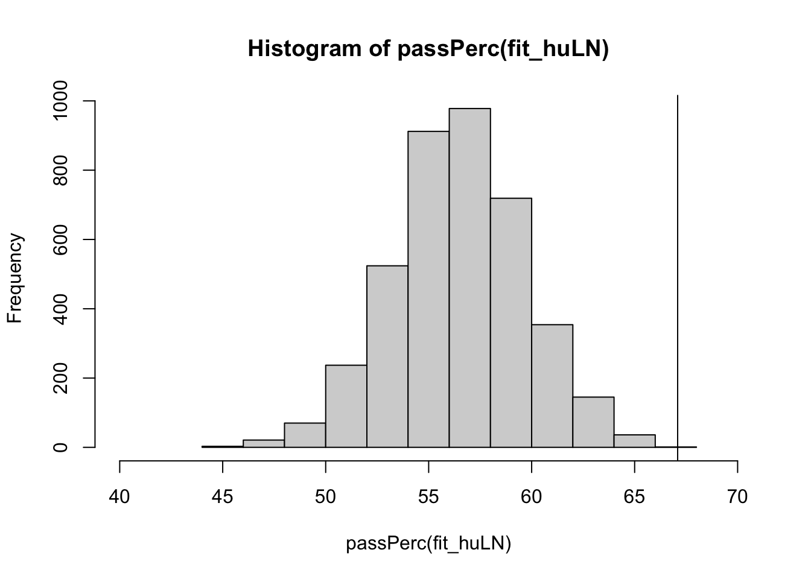
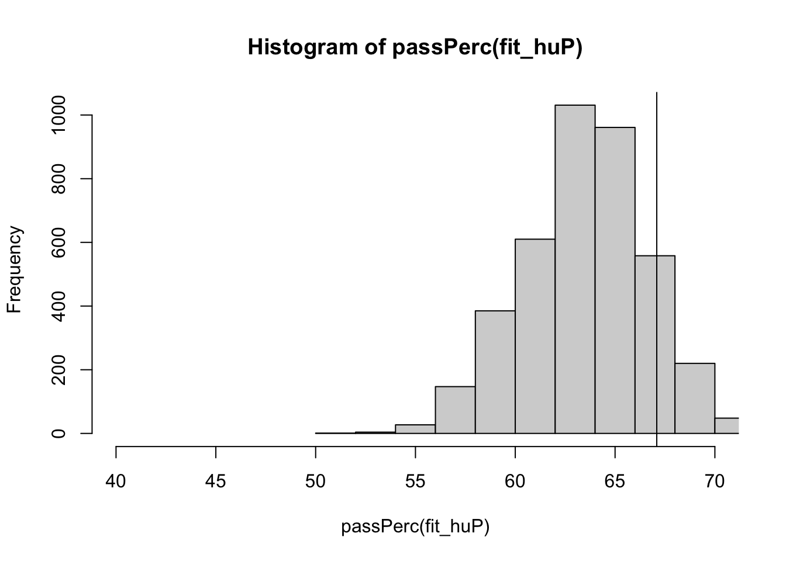

library(brms)
set.seed(07082023)Convergence and Checks with Bayes
This document illustrates different convergence criteria and model checking possibilities in Stan, which is the program underlying various R-packages for Bayesian analysis, including brms.
Preliminaries
An example: Predicting students’ math performance.
To illustrate Bayesian convergence and checks, we will use a data set that is available from the UCI Machine Learning repository. The data set we use can be downloaded here and contains two data sets and a merged file. We will use the “student-mat.csv” file.
We will use linear regression analysis to predict the final math grade of Portugese students in secondary schools. First, we load in the data. Make sure the data is saved in your current working directory or change the path to the data in the code below.
dat <- read.table("student-mat.csv", sep=";", header=TRUE)
head(dat) school sex age address famsize Pstatus Medu Fedu Mjob Fjob reason
1 GP F 18 U GT3 A 4 4 at_home teacher course
2 GP F 17 U GT3 T 1 1 at_home other course
3 GP F 15 U LE3 T 1 1 at_home other other
4 GP F 15 U GT3 T 4 2 health services home
5 GP F 16 U GT3 T 3 3 other other home
6 GP M 16 U LE3 T 4 3 services other reputation
guardian traveltime studytime failures schoolsup famsup paid activities
1 mother 2 2 0 yes no no no
2 father 1 2 0 no yes no no
3 mother 1 2 3 yes no yes no
4 mother 1 3 0 no yes yes yes
5 father 1 2 0 no yes yes no
6 mother 1 2 0 no yes yes yes
nursery higher internet romantic famrel freetime goout Dalc Walc health
1 yes yes no no 4 3 4 1 1 3
2 no yes yes no 5 3 3 1 1 3
3 yes yes yes no 4 3 2 2 3 3
4 yes yes yes yes 3 2 2 1 1 5
5 yes yes no no 4 3 2 1 2 5
6 yes yes yes no 5 4 2 1 2 5
absences G1 G2 G3
1 6 5 6 6
2 4 5 5 6
3 10 7 8 10
4 2 15 14 15
5 4 6 10 10
6 10 15 15 15We will predict the math grade at the third period G3 based on student’s sex (sex), the weekly time spent studying (studytime), whether the student has additional paid mathematics classes (paid), and whether the student wants to take higher education (higher).
fit1 <- brm(G3 ~ sex + studytime + paid + higher, data = dat)Compiling Stan program...Trying to compile a simple C fileRunning /Library/Frameworks/R.framework/Resources/bin/R CMD SHLIB foo.c
clang -arch arm64 -I"/Library/Frameworks/R.framework/Resources/include" -DNDEBUG -I"/Users/Erp00018/Library/R/arm64/4.2/library/Rcpp/include/" -I"/Users/Erp00018/Library/R/arm64/4.2/library/RcppEigen/include/" -I"/Users/Erp00018/Library/R/arm64/4.2/library/RcppEigen/include/unsupported" -I"/Users/Erp00018/Library/R/arm64/4.2/library/BH/include" -I"/Users/Erp00018/Library/R/arm64/4.2/library/StanHeaders/include/src/" -I"/Users/Erp00018/Library/R/arm64/4.2/library/StanHeaders/include/" -I"/Users/Erp00018/Library/R/arm64/4.2/library/RcppParallel/include/" -I"/Users/Erp00018/Library/R/arm64/4.2/library/rstan/include" -DEIGEN_NO_DEBUG -DBOOST_DISABLE_ASSERTS -DBOOST_PENDING_INTEGER_LOG2_HPP -DSTAN_THREADS -DUSE_STANC3 -DSTRICT_R_HEADERS -DBOOST_PHOENIX_NO_VARIADIC_EXPRESSION -DBOOST_NO_AUTO_PTR -include '/Users/Erp00018/Library/R/arm64/4.2/library/StanHeaders/include/stan/math/prim/fun/Eigen.hpp' -D_REENTRANT -DRCPP_PARALLEL_USE_TBB=1 -I/opt/R/arm64/include -fPIC -falign-functions=64 -Wall -g -O2 -c foo.c -o foo.o
In file included from <built-in>:1:
In file included from /Users/Erp00018/Library/R/arm64/4.2/library/StanHeaders/include/stan/math/prim/fun/Eigen.hpp:22:
In file included from /Users/Erp00018/Library/R/arm64/4.2/library/RcppEigen/include/Eigen/Dense:1:
In file included from /Users/Erp00018/Library/R/arm64/4.2/library/RcppEigen/include/Eigen/Core:88:
/Users/Erp00018/Library/R/arm64/4.2/library/RcppEigen/include/Eigen/src/Core/util/Macros.h:628:1: error: unknown type name 'namespace'
namespace Eigen {
^
/Users/Erp00018/Library/R/arm64/4.2/library/RcppEigen/include/Eigen/src/Core/util/Macros.h:628:16: error: expected ';' after top level declarator
namespace Eigen {
^
;
In file included from <built-in>:1:
In file included from /Users/Erp00018/Library/R/arm64/4.2/library/StanHeaders/include/stan/math/prim/fun/Eigen.hpp:22:
In file included from /Users/Erp00018/Library/R/arm64/4.2/library/RcppEigen/include/Eigen/Dense:1:
/Users/Erp00018/Library/R/arm64/4.2/library/RcppEigen/include/Eigen/Core:96:10: fatal error: 'complex' file not found
#include <complex>
^~~~~~~~~
3 errors generated.
make: *** [foo.o] Error 1Start sampling
SAMPLING FOR MODEL 'anon_model' NOW (CHAIN 1).
Chain 1:
Chain 1: Gradient evaluation took 1.7e-05 seconds
Chain 1: 1000 transitions using 10 leapfrog steps per transition would take 0.17 seconds.
Chain 1: Adjust your expectations accordingly!
Chain 1:
Chain 1:
Chain 1: Iteration: 1 / 2000 [ 0%] (Warmup)
Chain 1: Iteration: 200 / 2000 [ 10%] (Warmup)
Chain 1: Iteration: 400 / 2000 [ 20%] (Warmup)
Chain 1: Iteration: 600 / 2000 [ 30%] (Warmup)
Chain 1: Iteration: 800 / 2000 [ 40%] (Warmup)
Chain 1: Iteration: 1000 / 2000 [ 50%] (Warmup)
Chain 1: Iteration: 1001 / 2000 [ 50%] (Sampling)
Chain 1: Iteration: 1200 / 2000 [ 60%] (Sampling)
Chain 1: Iteration: 1400 / 2000 [ 70%] (Sampling)
Chain 1: Iteration: 1600 / 2000 [ 80%] (Sampling)
Chain 1: Iteration: 1800 / 2000 [ 90%] (Sampling)
Chain 1: Iteration: 2000 / 2000 [100%] (Sampling)
Chain 1:
Chain 1: Elapsed Time: 0.023 seconds (Warm-up)
Chain 1: 0.016 seconds (Sampling)
Chain 1: 0.039 seconds (Total)
Chain 1:
SAMPLING FOR MODEL 'anon_model' NOW (CHAIN 2).
Chain 2:
Chain 2: Gradient evaluation took 2e-06 seconds
Chain 2: 1000 transitions using 10 leapfrog steps per transition would take 0.02 seconds.
Chain 2: Adjust your expectations accordingly!
Chain 2:
Chain 2:
Chain 2: Iteration: 1 / 2000 [ 0%] (Warmup)
Chain 2: Iteration: 200 / 2000 [ 10%] (Warmup)
Chain 2: Iteration: 400 / 2000 [ 20%] (Warmup)
Chain 2: Iteration: 600 / 2000 [ 30%] (Warmup)
Chain 2: Iteration: 800 / 2000 [ 40%] (Warmup)
Chain 2: Iteration: 1000 / 2000 [ 50%] (Warmup)
Chain 2: Iteration: 1001 / 2000 [ 50%] (Sampling)
Chain 2: Iteration: 1200 / 2000 [ 60%] (Sampling)
Chain 2: Iteration: 1400 / 2000 [ 70%] (Sampling)
Chain 2: Iteration: 1600 / 2000 [ 80%] (Sampling)
Chain 2: Iteration: 1800 / 2000 [ 90%] (Sampling)
Chain 2: Iteration: 2000 / 2000 [100%] (Sampling)
Chain 2:
Chain 2: Elapsed Time: 0.024 seconds (Warm-up)
Chain 2: 0.016 seconds (Sampling)
Chain 2: 0.04 seconds (Total)
Chain 2:
SAMPLING FOR MODEL 'anon_model' NOW (CHAIN 3).
Chain 3:
Chain 3: Gradient evaluation took 2e-06 seconds
Chain 3: 1000 transitions using 10 leapfrog steps per transition would take 0.02 seconds.
Chain 3: Adjust your expectations accordingly!
Chain 3:
Chain 3:
Chain 3: Iteration: 1 / 2000 [ 0%] (Warmup)
Chain 3: Iteration: 200 / 2000 [ 10%] (Warmup)
Chain 3: Iteration: 400 / 2000 [ 20%] (Warmup)
Chain 3: Iteration: 600 / 2000 [ 30%] (Warmup)
Chain 3: Iteration: 800 / 2000 [ 40%] (Warmup)
Chain 3: Iteration: 1000 / 2000 [ 50%] (Warmup)
Chain 3: Iteration: 1001 / 2000 [ 50%] (Sampling)
Chain 3: Iteration: 1200 / 2000 [ 60%] (Sampling)
Chain 3: Iteration: 1400 / 2000 [ 70%] (Sampling)
Chain 3: Iteration: 1600 / 2000 [ 80%] (Sampling)
Chain 3: Iteration: 1800 / 2000 [ 90%] (Sampling)
Chain 3: Iteration: 2000 / 2000 [100%] (Sampling)
Chain 3:
Chain 3: Elapsed Time: 0.025 seconds (Warm-up)
Chain 3: 0.016 seconds (Sampling)
Chain 3: 0.041 seconds (Total)
Chain 3:
SAMPLING FOR MODEL 'anon_model' NOW (CHAIN 4).
Chain 4:
Chain 4: Gradient evaluation took 1e-06 seconds
Chain 4: 1000 transitions using 10 leapfrog steps per transition would take 0.01 seconds.
Chain 4: Adjust your expectations accordingly!
Chain 4:
Chain 4:
Chain 4: Iteration: 1 / 2000 [ 0%] (Warmup)
Chain 4: Iteration: 200 / 2000 [ 10%] (Warmup)
Chain 4: Iteration: 400 / 2000 [ 20%] (Warmup)
Chain 4: Iteration: 600 / 2000 [ 30%] (Warmup)
Chain 4: Iteration: 800 / 2000 [ 40%] (Warmup)
Chain 4: Iteration: 1000 / 2000 [ 50%] (Warmup)
Chain 4: Iteration: 1001 / 2000 [ 50%] (Sampling)
Chain 4: Iteration: 1200 / 2000 [ 60%] (Sampling)
Chain 4: Iteration: 1400 / 2000 [ 70%] (Sampling)
Chain 4: Iteration: 1600 / 2000 [ 80%] (Sampling)
Chain 4: Iteration: 1800 / 2000 [ 90%] (Sampling)
Chain 4: Iteration: 2000 / 2000 [100%] (Sampling)
Chain 4:
Chain 4: Elapsed Time: 0.023 seconds (Warm-up)
Chain 4: 0.016 seconds (Sampling)
Chain 4: 0.039 seconds (Total)
Chain 4: summary(fit1) Family: gaussian
Links: mu = identity; sigma = identity
Formula: G3 ~ sex + studytime + paid + higher
Data: dat (Number of observations: 395)
Draws: 4 chains, each with iter = 2000; warmup = 1000; thin = 1;
total post-warmup draws = 4000
Population-Level Effects:
Estimate Est.Error l-95% CI u-95% CI Rhat Bulk_ESS Tail_ESS
Intercept 4.68 1.18 2.44 7.02 1.00 5073 3244
sexM 1.59 0.48 0.62 2.53 1.00 5291 2617
studytime 0.59 0.29 0.03 1.14 1.00 4683 3005
paidyes 0.68 0.48 -0.25 1.62 1.00 5215 2963
higheryes 3.66 1.07 1.53 5.74 1.00 5133 2977
Family Specific Parameters:
Estimate Est.Error l-95% CI u-95% CI Rhat Bulk_ESS Tail_ESS
sigma 4.46 0.16 4.16 4.78 1.00 5316 3244
Draws were sampled using sampling(NUTS). For each parameter, Bulk_ESS
and Tail_ESS are effective sample size measures, and Rhat is the potential
scale reduction factor on split chains (at convergence, Rhat = 1).Note that here, we rely on the default prior distributions in brms. Based on the point estimates, we could conclude that whether the student wants to take higher education, their sex, and, to a lesser extent, time spent studying can predict the math grade at the third period. However, to fully trust these results, we want to make sure that the model has converged. Luckily, brms will provide warnings whenever the model does not seem to have converged based on numeric cutoffs. Fortunately, convergence seems fine here.
Convergence
Generally, for simple models you are not likely to run into convergence issues. However, as models become more complex, sampling from the posterior might prove to be more difficult and convergence issues can arise. If this is the case, there are multiple potential solutions:
- Change sampler settings, e.g., run more iterations
- Change the priors
- Change the model
Below, a short summary on checking convergence with brms is provided. Extensive information on convergence issues with Stan or brms can be found here, which is a highly recommended read.
Visual diagnostics
First, we can look at traceplots for specific parameters (note that we add b_ to the variable name):
mcmc_plot(fit1, variable = "b_Intercept", type = "trace")No divergences to plot.
Or we can plot density and traceplots for all parameters simultaneously:
plot(fit1)

Numerical diagnostics
There are several numerical diagnostics to check. Some cutoffs for each diagnostic are presented below but remember that these are arbitrary cutoffs and in the end, all available information should be combined to guide assessment of convergence.
- Rhat: ratio of the variance between and within chains. Values of 1 indicate convergence, larger values indicate non-convergence. General cutoff: Rhat < 1.01.
- Effective sample size: how many independent samples contain the same amount of information as the dependent samples obtained? Bulk-ESS estimates sampling efficiency for point summaries such as the posterior mean and should be about 100 times the number of chains. Tail-ESS estimates sampling efficiency for the posterior tails.
- Divergent transitions: indicate that our iteration steps too far and moves away from the actual posterior density. Even a small number can bias the results, but just a few divergences and good Rhat and ESS values can provide a sufficiently reliable posterior.
- Max. treedepth exceeded: a warning that your sampler is not as efficient. If this is your only warning and other diagnostics are good, you can ignore this warning.
- Low Bayesian Fraction of Missing Information (BFMI): indicates that the posterior distribution was not well explored.
Solving problems
By default, brms will run 4 chains of 2000 MCMC samples each in which the first 1000 draws are removed as burn-in. As a result, 4000 samples remain for inference.
If Rhat is too high or ESS or BFMI too low, try to increase the number of iterations. This can be done via the iter argument. Note that by default, half of the number of iterations is removed as burn-in so to avoid removing too much samples as burn-in, you can additionally specify the warmup to remain at 1000 iterations.
fit2 <- brm(G3 ~ sex + studytime + paid + higher, data = dat,
iter = 4000, warmup = 1000)If increasing the number of iterations does not help, you should carefully revisit your model and respecify or introduce more information via stronger priors.
Divergent transitions are more tricky since they indicate a problem or a difficulty with sampling from the posterior distribution which is rarely solved by increasing the number of iterations. Instead, you could try to increase the target average proposal acceptance probability via adapt_delta. The default is 0.80 which you can increase to, for example, 0.90 although this will slow down the sampling.
fit2 <- brm(G3 ~ sex + studytime + paid + higher, data = dat,
control = list(adapt_delta = 0.90))Posterior predictive checks
brms has several posterior predictive checks built in. For example, we can compare the sample means of replicated data sets to the observed data:
pp_check(fit1, type = "stat", stat = "mean", prefix = "ppc")Using all posterior draws for ppc type 'stat' by default.`stat_bin()` using `bins = 30`. Pick better value with `binwidth`.
Or standard deviations:
pp_check(fit1, type = "stat", stat = "sd", prefix = "ppc")Using all posterior draws for ppc type 'stat' by default.`stat_bin()` using `bins = 30`. Pick better value with `binwidth`.
Or both combined:
pp_check(fit1, type = "stat_2d", prefix = "ppc")Using all posterior draws for ppc type 'stat_2d' by default.
These posterior predictive checks all show that generated data based on the model resembles the observed data quite well. However, suppose we are not just interested in accurately capturing the mean and standard deviation of the math grades but we also want to accurately capture the percentage of students who pass the course. We can check whether our model accurately represents this quantity by conducting a posterior predictive check using a custom test statistic.
First, let’s compute the percentage of students who pass the course in the observed data. The math grade ranges from 0 to 20 and a grade equal to or higher than 10 means a pass:
yobs <- dat$G3
passObs <- sum(yobs >= 10)/length(yobs)*100
passObs[1] 67.08861Now, let’s write a function that can compute the percentage of students who pass the course for data sets generated from the posterior predictive distribution. We use the posterior_predict function to generate 4000 data sets containing 395 y-values: one data set per posterior draw.
passPerc <- function(fit){
yrep <- posterior_predict(fit)
pass <- apply(yrep, 1, function(x){
sum(x >= 10)/length(x)*100
})
return(pass)
}We can now plot the pass percentages for the generated data and compare them to the observed percentage:
hist(passPerc(fit1), xlim = c(40, 70))
abline(v = passObs)
We see that our model does not capture this percentage well. We can further quantify this by computing the posterior predictive p-value, which equals zero in this case because none of the generated data sets exceed the observed pass percentage.
sum(passPerc(fit1) >= passObs)/length(passPerc(fit1))*100[1] 0If we look at a simple graphical posterior predictive check, we can see what is going wrong:
pp_check(fit1, type = "dens_overlay", prefix = "ppc", ndraws = 100)
Our data contains much more students who got a zero than our model predicts1. The nice thing about this check is that this immediately shows how we might improve our model: we need to allow for more zeros. This can be done in brms using a hurdle model, such as the hurdle log-normal:
fit_huLN <- brm(G3 ~ sex + studytime + paid + higher, data = dat,
family = hurdle_lognormal())Compiling Stan program...Trying to compile a simple C fileRunning /Library/Frameworks/R.framework/Resources/bin/R CMD SHLIB foo.c
clang -arch arm64 -I"/Library/Frameworks/R.framework/Resources/include" -DNDEBUG -I"/Users/Erp00018/Library/R/arm64/4.2/library/Rcpp/include/" -I"/Users/Erp00018/Library/R/arm64/4.2/library/RcppEigen/include/" -I"/Users/Erp00018/Library/R/arm64/4.2/library/RcppEigen/include/unsupported" -I"/Users/Erp00018/Library/R/arm64/4.2/library/BH/include" -I"/Users/Erp00018/Library/R/arm64/4.2/library/StanHeaders/include/src/" -I"/Users/Erp00018/Library/R/arm64/4.2/library/StanHeaders/include/" -I"/Users/Erp00018/Library/R/arm64/4.2/library/RcppParallel/include/" -I"/Users/Erp00018/Library/R/arm64/4.2/library/rstan/include" -DEIGEN_NO_DEBUG -DBOOST_DISABLE_ASSERTS -DBOOST_PENDING_INTEGER_LOG2_HPP -DSTAN_THREADS -DUSE_STANC3 -DSTRICT_R_HEADERS -DBOOST_PHOENIX_NO_VARIADIC_EXPRESSION -DBOOST_NO_AUTO_PTR -include '/Users/Erp00018/Library/R/arm64/4.2/library/StanHeaders/include/stan/math/prim/fun/Eigen.hpp' -D_REENTRANT -DRCPP_PARALLEL_USE_TBB=1 -I/opt/R/arm64/include -fPIC -falign-functions=64 -Wall -g -O2 -c foo.c -o foo.o
In file included from <built-in>:1:
In file included from /Users/Erp00018/Library/R/arm64/4.2/library/StanHeaders/include/stan/math/prim/fun/Eigen.hpp:22:
In file included from /Users/Erp00018/Library/R/arm64/4.2/library/RcppEigen/include/Eigen/Dense:1:
In file included from /Users/Erp00018/Library/R/arm64/4.2/library/RcppEigen/include/Eigen/Core:88:
/Users/Erp00018/Library/R/arm64/4.2/library/RcppEigen/include/Eigen/src/Core/util/Macros.h:628:1: error: unknown type name 'namespace'
namespace Eigen {
^
/Users/Erp00018/Library/R/arm64/4.2/library/RcppEigen/include/Eigen/src/Core/util/Macros.h:628:16: error: expected ';' after top level declarator
namespace Eigen {
^
;
In file included from <built-in>:1:
In file included from /Users/Erp00018/Library/R/arm64/4.2/library/StanHeaders/include/stan/math/prim/fun/Eigen.hpp:22:
In file included from /Users/Erp00018/Library/R/arm64/4.2/library/RcppEigen/include/Eigen/Dense:1:
/Users/Erp00018/Library/R/arm64/4.2/library/RcppEigen/include/Eigen/Core:96:10: fatal error: 'complex' file not found
#include <complex>
^~~~~~~~~
3 errors generated.
make: *** [foo.o] Error 1Start sampling
SAMPLING FOR MODEL 'anon_model' NOW (CHAIN 1).
Chain 1:
Chain 1: Gradient evaluation took 7e-05 seconds
Chain 1: 1000 transitions using 10 leapfrog steps per transition would take 0.7 seconds.
Chain 1: Adjust your expectations accordingly!
Chain 1:
Chain 1:
Chain 1: Iteration: 1 / 2000 [ 0%] (Warmup)
Chain 1: Iteration: 200 / 2000 [ 10%] (Warmup)
Chain 1: Iteration: 400 / 2000 [ 20%] (Warmup)
Chain 1: Iteration: 600 / 2000 [ 30%] (Warmup)
Chain 1: Iteration: 800 / 2000 [ 40%] (Warmup)
Chain 1: Iteration: 1000 / 2000 [ 50%] (Warmup)
Chain 1: Iteration: 1001 / 2000 [ 50%] (Sampling)
Chain 1: Iteration: 1200 / 2000 [ 60%] (Sampling)
Chain 1: Iteration: 1400 / 2000 [ 70%] (Sampling)
Chain 1: Iteration: 1600 / 2000 [ 80%] (Sampling)
Chain 1: Iteration: 1800 / 2000 [ 90%] (Sampling)
Chain 1: Iteration: 2000 / 2000 [100%] (Sampling)
Chain 1:
Chain 1: Elapsed Time: 0.253 seconds (Warm-up)
Chain 1: 0.244 seconds (Sampling)
Chain 1: 0.497 seconds (Total)
Chain 1:
SAMPLING FOR MODEL 'anon_model' NOW (CHAIN 2).
Chain 2:
Chain 2: Gradient evaluation took 4.6e-05 seconds
Chain 2: 1000 transitions using 10 leapfrog steps per transition would take 0.46 seconds.
Chain 2: Adjust your expectations accordingly!
Chain 2:
Chain 2:
Chain 2: Iteration: 1 / 2000 [ 0%] (Warmup)
Chain 2: Iteration: 200 / 2000 [ 10%] (Warmup)
Chain 2: Iteration: 400 / 2000 [ 20%] (Warmup)
Chain 2: Iteration: 600 / 2000 [ 30%] (Warmup)
Chain 2: Iteration: 800 / 2000 [ 40%] (Warmup)
Chain 2: Iteration: 1000 / 2000 [ 50%] (Warmup)
Chain 2: Iteration: 1001 / 2000 [ 50%] (Sampling)
Chain 2: Iteration: 1200 / 2000 [ 60%] (Sampling)
Chain 2: Iteration: 1400 / 2000 [ 70%] (Sampling)
Chain 2: Iteration: 1600 / 2000 [ 80%] (Sampling)
Chain 2: Iteration: 1800 / 2000 [ 90%] (Sampling)
Chain 2: Iteration: 2000 / 2000 [100%] (Sampling)
Chain 2:
Chain 2: Elapsed Time: 0.28 seconds (Warm-up)
Chain 2: 0.244 seconds (Sampling)
Chain 2: 0.524 seconds (Total)
Chain 2:
SAMPLING FOR MODEL 'anon_model' NOW (CHAIN 3).
Chain 3:
Chain 3: Gradient evaluation took 4.5e-05 seconds
Chain 3: 1000 transitions using 10 leapfrog steps per transition would take 0.45 seconds.
Chain 3: Adjust your expectations accordingly!
Chain 3:
Chain 3:
Chain 3: Iteration: 1 / 2000 [ 0%] (Warmup)
Chain 3: Iteration: 200 / 2000 [ 10%] (Warmup)
Chain 3: Iteration: 400 / 2000 [ 20%] (Warmup)
Chain 3: Iteration: 600 / 2000 [ 30%] (Warmup)
Chain 3: Iteration: 800 / 2000 [ 40%] (Warmup)
Chain 3: Iteration: 1000 / 2000 [ 50%] (Warmup)
Chain 3: Iteration: 1001 / 2000 [ 50%] (Sampling)
Chain 3: Iteration: 1200 / 2000 [ 60%] (Sampling)
Chain 3: Iteration: 1400 / 2000 [ 70%] (Sampling)
Chain 3: Iteration: 1600 / 2000 [ 80%] (Sampling)
Chain 3: Iteration: 1800 / 2000 [ 90%] (Sampling)
Chain 3: Iteration: 2000 / 2000 [100%] (Sampling)
Chain 3:
Chain 3: Elapsed Time: 0.262 seconds (Warm-up)
Chain 3: 0.258 seconds (Sampling)
Chain 3: 0.52 seconds (Total)
Chain 3:
SAMPLING FOR MODEL 'anon_model' NOW (CHAIN 4).
Chain 4:
Chain 4: Gradient evaluation took 3.7e-05 seconds
Chain 4: 1000 transitions using 10 leapfrog steps per transition would take 0.37 seconds.
Chain 4: Adjust your expectations accordingly!
Chain 4:
Chain 4:
Chain 4: Iteration: 1 / 2000 [ 0%] (Warmup)
Chain 4: Iteration: 200 / 2000 [ 10%] (Warmup)
Chain 4: Iteration: 400 / 2000 [ 20%] (Warmup)
Chain 4: Iteration: 600 / 2000 [ 30%] (Warmup)
Chain 4: Iteration: 800 / 2000 [ 40%] (Warmup)
Chain 4: Iteration: 1000 / 2000 [ 50%] (Warmup)
Chain 4: Iteration: 1001 / 2000 [ 50%] (Sampling)
Chain 4: Iteration: 1200 / 2000 [ 60%] (Sampling)
Chain 4: Iteration: 1400 / 2000 [ 70%] (Sampling)
Chain 4: Iteration: 1600 / 2000 [ 80%] (Sampling)
Chain 4: Iteration: 1800 / 2000 [ 90%] (Sampling)
Chain 4: Iteration: 2000 / 2000 [100%] (Sampling)
Chain 4:
Chain 4: Elapsed Time: 0.263 seconds (Warm-up)
Chain 4: 0.238 seconds (Sampling)
Chain 4: 0.501 seconds (Total)
Chain 4: This model can better predict the number of zeros:
pp_check(fit_huLN, type = "dens_overlay", prefix = "ppc", ndraws = 100)
Let’s see if this solves our problem:
hist(passPerc(fit_huLN), xlim = c(40, 70))
abline(v = passObs)
sum(passPerc(fit_huLN) >= passObs)/length(passPerc(fit_huLN))*100[1] 0.05Unfortunately, this model still does not do a very good job of accurately representing the number of students who passed the course.
Let’s try a slightly different hurdle model, the hurdle Poisson:
fit_huP <- brm(G3 ~ sex + studytime + paid + higher, data = dat,
family = hurdle_poisson())Compiling Stan program...Trying to compile a simple C fileRunning /Library/Frameworks/R.framework/Resources/bin/R CMD SHLIB foo.c
clang -arch arm64 -I"/Library/Frameworks/R.framework/Resources/include" -DNDEBUG -I"/Users/Erp00018/Library/R/arm64/4.2/library/Rcpp/include/" -I"/Users/Erp00018/Library/R/arm64/4.2/library/RcppEigen/include/" -I"/Users/Erp00018/Library/R/arm64/4.2/library/RcppEigen/include/unsupported" -I"/Users/Erp00018/Library/R/arm64/4.2/library/BH/include" -I"/Users/Erp00018/Library/R/arm64/4.2/library/StanHeaders/include/src/" -I"/Users/Erp00018/Library/R/arm64/4.2/library/StanHeaders/include/" -I"/Users/Erp00018/Library/R/arm64/4.2/library/RcppParallel/include/" -I"/Users/Erp00018/Library/R/arm64/4.2/library/rstan/include" -DEIGEN_NO_DEBUG -DBOOST_DISABLE_ASSERTS -DBOOST_PENDING_INTEGER_LOG2_HPP -DSTAN_THREADS -DUSE_STANC3 -DSTRICT_R_HEADERS -DBOOST_PHOENIX_NO_VARIADIC_EXPRESSION -DBOOST_NO_AUTO_PTR -include '/Users/Erp00018/Library/R/arm64/4.2/library/StanHeaders/include/stan/math/prim/fun/Eigen.hpp' -D_REENTRANT -DRCPP_PARALLEL_USE_TBB=1 -I/opt/R/arm64/include -fPIC -falign-functions=64 -Wall -g -O2 -c foo.c -o foo.o
In file included from <built-in>:1:
In file included from /Users/Erp00018/Library/R/arm64/4.2/library/StanHeaders/include/stan/math/prim/fun/Eigen.hpp:22:
In file included from /Users/Erp00018/Library/R/arm64/4.2/library/RcppEigen/include/Eigen/Dense:1:
In file included from /Users/Erp00018/Library/R/arm64/4.2/library/RcppEigen/include/Eigen/Core:88:
/Users/Erp00018/Library/R/arm64/4.2/library/RcppEigen/include/Eigen/src/Core/util/Macros.h:628:1: error: unknown type name 'namespace'
namespace Eigen {
^
/Users/Erp00018/Library/R/arm64/4.2/library/RcppEigen/include/Eigen/src/Core/util/Macros.h:628:16: error: expected ';' after top level declarator
namespace Eigen {
^
;
In file included from <built-in>:1:
In file included from /Users/Erp00018/Library/R/arm64/4.2/library/StanHeaders/include/stan/math/prim/fun/Eigen.hpp:22:
In file included from /Users/Erp00018/Library/R/arm64/4.2/library/RcppEigen/include/Eigen/Dense:1:
/Users/Erp00018/Library/R/arm64/4.2/library/RcppEigen/include/Eigen/Core:96:10: fatal error: 'complex' file not found
#include <complex>
^~~~~~~~~
3 errors generated.
make: *** [foo.o] Error 1Start sampling
SAMPLING FOR MODEL 'anon_model' NOW (CHAIN 1).
Chain 1:
Chain 1: Gradient evaluation took 8.7e-05 seconds
Chain 1: 1000 transitions using 10 leapfrog steps per transition would take 0.87 seconds.
Chain 1: Adjust your expectations accordingly!
Chain 1:
Chain 1:
Chain 1: Iteration: 1 / 2000 [ 0%] (Warmup)
Chain 1: Iteration: 200 / 2000 [ 10%] (Warmup)
Chain 1: Iteration: 400 / 2000 [ 20%] (Warmup)
Chain 1: Iteration: 600 / 2000 [ 30%] (Warmup)
Chain 1: Iteration: 800 / 2000 [ 40%] (Warmup)
Chain 1: Iteration: 1000 / 2000 [ 50%] (Warmup)
Chain 1: Iteration: 1001 / 2000 [ 50%] (Sampling)
Chain 1: Iteration: 1200 / 2000 [ 60%] (Sampling)
Chain 1: Iteration: 1400 / 2000 [ 70%] (Sampling)
Chain 1: Iteration: 1600 / 2000 [ 80%] (Sampling)
Chain 1: Iteration: 1800 / 2000 [ 90%] (Sampling)
Chain 1: Iteration: 2000 / 2000 [100%] (Sampling)
Chain 1:
Chain 1: Elapsed Time: 0.424 seconds (Warm-up)
Chain 1: 0.415 seconds (Sampling)
Chain 1: 0.839 seconds (Total)
Chain 1:
SAMPLING FOR MODEL 'anon_model' NOW (CHAIN 2).
Chain 2:
Chain 2: Gradient evaluation took 6.3e-05 seconds
Chain 2: 1000 transitions using 10 leapfrog steps per transition would take 0.63 seconds.
Chain 2: Adjust your expectations accordingly!
Chain 2:
Chain 2:
Chain 2: Iteration: 1 / 2000 [ 0%] (Warmup)
Chain 2: Iteration: 200 / 2000 [ 10%] (Warmup)
Chain 2: Iteration: 400 / 2000 [ 20%] (Warmup)
Chain 2: Iteration: 600 / 2000 [ 30%] (Warmup)
Chain 2: Iteration: 800 / 2000 [ 40%] (Warmup)
Chain 2: Iteration: 1000 / 2000 [ 50%] (Warmup)
Chain 2: Iteration: 1001 / 2000 [ 50%] (Sampling)
Chain 2: Iteration: 1200 / 2000 [ 60%] (Sampling)
Chain 2: Iteration: 1400 / 2000 [ 70%] (Sampling)
Chain 2: Iteration: 1600 / 2000 [ 80%] (Sampling)
Chain 2: Iteration: 1800 / 2000 [ 90%] (Sampling)
Chain 2: Iteration: 2000 / 2000 [100%] (Sampling)
Chain 2:
Chain 2: Elapsed Time: 0.438 seconds (Warm-up)
Chain 2: 0.42 seconds (Sampling)
Chain 2: 0.858 seconds (Total)
Chain 2:
SAMPLING FOR MODEL 'anon_model' NOW (CHAIN 3).
Chain 3:
Chain 3: Gradient evaluation took 6e-05 seconds
Chain 3: 1000 transitions using 10 leapfrog steps per transition would take 0.6 seconds.
Chain 3: Adjust your expectations accordingly!
Chain 3:
Chain 3:
Chain 3: Iteration: 1 / 2000 [ 0%] (Warmup)
Chain 3: Iteration: 200 / 2000 [ 10%] (Warmup)
Chain 3: Iteration: 400 / 2000 [ 20%] (Warmup)
Chain 3: Iteration: 600 / 2000 [ 30%] (Warmup)
Chain 3: Iteration: 800 / 2000 [ 40%] (Warmup)
Chain 3: Iteration: 1000 / 2000 [ 50%] (Warmup)
Chain 3: Iteration: 1001 / 2000 [ 50%] (Sampling)
Chain 3: Iteration: 1200 / 2000 [ 60%] (Sampling)
Chain 3: Iteration: 1400 / 2000 [ 70%] (Sampling)
Chain 3: Iteration: 1600 / 2000 [ 80%] (Sampling)
Chain 3: Iteration: 1800 / 2000 [ 90%] (Sampling)
Chain 3: Iteration: 2000 / 2000 [100%] (Sampling)
Chain 3:
Chain 3: Elapsed Time: 0.465 seconds (Warm-up)
Chain 3: 0.425 seconds (Sampling)
Chain 3: 0.89 seconds (Total)
Chain 3:
SAMPLING FOR MODEL 'anon_model' NOW (CHAIN 4).
Chain 4:
Chain 4: Gradient evaluation took 6.3e-05 seconds
Chain 4: 1000 transitions using 10 leapfrog steps per transition would take 0.63 seconds.
Chain 4: Adjust your expectations accordingly!
Chain 4:
Chain 4:
Chain 4: Iteration: 1 / 2000 [ 0%] (Warmup)
Chain 4: Iteration: 200 / 2000 [ 10%] (Warmup)
Chain 4: Iteration: 400 / 2000 [ 20%] (Warmup)
Chain 4: Iteration: 600 / 2000 [ 30%] (Warmup)
Chain 4: Iteration: 800 / 2000 [ 40%] (Warmup)
Chain 4: Iteration: 1000 / 2000 [ 50%] (Warmup)
Chain 4: Iteration: 1001 / 2000 [ 50%] (Sampling)
Chain 4: Iteration: 1200 / 2000 [ 60%] (Sampling)
Chain 4: Iteration: 1400 / 2000 [ 70%] (Sampling)
Chain 4: Iteration: 1600 / 2000 [ 80%] (Sampling)
Chain 4: Iteration: 1800 / 2000 [ 90%] (Sampling)
Chain 4: Iteration: 2000 / 2000 [100%] (Sampling)
Chain 4:
Chain 4: Elapsed Time: 0.438 seconds (Warm-up)
Chain 4: 0.414 seconds (Sampling)
Chain 4: 0.852 seconds (Total)
Chain 4: hist(passPerc(fit_huP), xlim = c(40, 70))
abline(v = passObs)
sum(passPerc(fit_huP) >= passObs)/length(passPerc(fit_huP))*100[1] 12.825It is still not perfect, but at least we are getting somewhere.
The important point here is that you should define the test statistic(s) you care about and use those for posterior predictive checking. The goal is not to definitively accept your model but rather to poke and prod it in different ways to see where improvements might be made and knowledge might be gained.
Prior predictive checks
We can use the same intuition to generate data from the prior predictive distribution before we run the analysis. This can be done to assess whether our priors make sense.
The code to do the predictive checks is the same, only now we need to use the brms fitobject that samples from the prior only:
priorfit <- brm(G3 ~ sex + studytime + paid + higher, data = dat,
sample_prior = "only")
pp_check(priorfit, prefix = "ppd", ndraws = 100)Original computing environment
devtools::session_info()─ Session info ───────────────────────────────────────────────────────────────
setting value
version R version 4.2.2 (2022-10-31)
os macOS Ventura 13.5
system aarch64, darwin20
ui X11
language (EN)
collate en_US.UTF-8
ctype en_US.UTF-8
tz Europe/Amsterdam
date 2023-08-09
pandoc 2.19.2 @ /Applications/RStudio.app/Contents/Resources/app/quarto/bin/tools/ (via rmarkdown)
─ Packages ───────────────────────────────────────────────────────────────────
package * version date (UTC) lib source
abind 1.4-5 2016-07-21 [1] CRAN (R 4.2.0)
backports 1.4.1 2021-12-13 [1] CRAN (R 4.2.0)
base64enc 0.1-3 2015-07-28 [1] CRAN (R 4.2.0)
bayesplot 1.10.0 2022-11-16 [1] CRAN (R 4.2.0)
boot 1.3-28 2021-05-03 [2] CRAN (R 4.2.2)
bridgesampling 1.1-2 2021-04-16 [1] CRAN (R 4.2.0)
brms * 2.19.0 2023-03-14 [1] CRAN (R 4.2.0)
Brobdingnag 1.2-9 2022-10-19 [1] CRAN (R 4.2.0)
cachem 1.0.8 2023-05-01 [1] CRAN (R 4.2.0)
callr 3.7.3 2022-11-02 [1] CRAN (R 4.2.0)
checkmate 2.2.0 2023-04-27 [1] CRAN (R 4.2.0)
cli 3.6.1 2023-03-23 [1] CRAN (R 4.2.0)
coda 0.19-4 2020-09-30 [1] CRAN (R 4.2.0)
codetools 0.2-18 2020-11-04 [2] CRAN (R 4.2.2)
colorspace 2.1-0 2023-01-23 [1] CRAN (R 4.2.0)
colourpicker 1.2.0 2022-10-28 [1] CRAN (R 4.2.0)
crayon 1.5.2 2022-09-29 [1] CRAN (R 4.2.0)
crosstalk 1.2.0 2021-11-04 [1] CRAN (R 4.2.0)
curl 5.0.0 2023-01-12 [1] CRAN (R 4.2.0)
devtools 2.4.5 2022-10-11 [1] CRAN (R 4.2.0)
digest 0.6.31 2022-12-11 [1] CRAN (R 4.2.0)
distributional 0.3.2 2023-03-22 [1] CRAN (R 4.2.0)
dplyr 1.1.2 2023-04-20 [1] CRAN (R 4.2.0)
DT 0.27 2023-01-17 [1] CRAN (R 4.2.0)
dygraphs 1.1.1.6 2018-07-11 [1] CRAN (R 4.2.0)
ellipsis 0.3.2 2021-04-29 [1] CRAN (R 4.2.0)
emmeans 1.8.5 2023-03-08 [1] CRAN (R 4.2.0)
estimability 1.4.1 2022-08-05 [1] CRAN (R 4.2.0)
evaluate 0.21 2023-05-05 [1] CRAN (R 4.2.0)
fansi 1.0.4 2023-01-22 [1] CRAN (R 4.2.0)
farver 2.1.1 2022-07-06 [1] CRAN (R 4.2.0)
fastmap 1.1.1 2023-02-24 [1] CRAN (R 4.2.0)
fs 1.6.2 2023-04-25 [1] CRAN (R 4.2.0)
gamm4 0.2-6 2020-04-03 [1] CRAN (R 4.2.0)
generics 0.1.3 2022-07-05 [1] CRAN (R 4.2.0)
ggplot2 3.4.2 2023-04-03 [1] CRAN (R 4.2.0)
glue 1.6.2 2022-02-24 [1] CRAN (R 4.2.0)
gridExtra 2.3 2017-09-09 [1] CRAN (R 4.2.0)
gtable 0.3.3 2023-03-21 [1] CRAN (R 4.2.0)
gtools 3.9.4 2022-11-27 [1] CRAN (R 4.2.0)
htmltools 0.5.5 2023-03-23 [1] CRAN (R 4.2.0)
htmlwidgets 1.6.2 2023-03-17 [1] CRAN (R 4.2.0)
httpuv 1.6.10 2023-05-08 [1] CRAN (R 4.2.2)
igraph 1.4.2 2023-04-07 [1] CRAN (R 4.2.0)
inline 0.3.19 2021-05-31 [1] CRAN (R 4.2.0)
jsonlite 1.8.4 2022-12-06 [1] CRAN (R 4.2.0)
knitr 1.42 2023-01-25 [1] CRAN (R 4.2.0)
labeling 0.4.2 2020-10-20 [1] CRAN (R 4.2.0)
later 1.3.1 2023-05-02 [1] CRAN (R 4.2.0)
lattice 0.20-45 2021-09-22 [2] CRAN (R 4.2.2)
lifecycle 1.0.3 2022-10-07 [1] CRAN (R 4.2.0)
lme4 1.1-33 2023-04-25 [1] CRAN (R 4.2.0)
loo 2.6.0 2023-03-31 [1] CRAN (R 4.2.0)
magrittr 2.0.3 2022-03-30 [1] CRAN (R 4.2.0)
markdown 1.6 2023-04-07 [1] CRAN (R 4.2.0)
MASS 7.3-58.1 2022-08-03 [2] CRAN (R 4.2.2)
Matrix 1.5-1 2022-09-13 [2] CRAN (R 4.2.2)
matrixStats 0.63.0 2022-11-18 [1] CRAN (R 4.2.0)
memoise 2.0.1 2021-11-26 [1] CRAN (R 4.2.0)
mgcv 1.8-41 2022-10-21 [2] CRAN (R 4.2.2)
mime 0.12 2021-09-28 [1] CRAN (R 4.2.0)
miniUI 0.1.1.1 2018-05-18 [1] CRAN (R 4.2.0)
minqa 1.2.5 2022-10-19 [1] CRAN (R 4.2.0)
multcomp 1.4-23 2023-03-09 [1] CRAN (R 4.2.0)
munsell 0.5.0 2018-06-12 [1] CRAN (R 4.2.0)
mvtnorm 1.1-3 2021-10-08 [1] CRAN (R 4.2.0)
nlme 3.1-160 2022-10-10 [2] CRAN (R 4.2.2)
nloptr 2.0.3 2022-05-26 [1] CRAN (R 4.2.0)
pillar 1.9.0 2023-03-22 [1] CRAN (R 4.2.0)
pkgbuild 1.4.0 2022-11-27 [1] CRAN (R 4.2.0)
pkgconfig 2.0.3 2019-09-22 [1] CRAN (R 4.2.0)
pkgload 1.3.2 2022-11-16 [1] CRAN (R 4.2.0)
plyr 1.8.8 2022-11-11 [1] CRAN (R 4.2.0)
posterior 1.4.1 2023-03-14 [1] CRAN (R 4.2.0)
prettyunits 1.1.1 2020-01-24 [1] CRAN (R 4.2.0)
processx 3.8.1 2023-04-18 [1] CRAN (R 4.2.0)
profvis 0.3.8 2023-05-02 [1] CRAN (R 4.2.0)
projpred 2.6.0 2023-06-01 [1] CRAN (R 4.2.0)
promises 1.2.0.1 2021-02-11 [1] CRAN (R 4.2.0)
ps 1.7.5 2023-04-18 [1] CRAN (R 4.2.0)
purrr 1.0.1 2023-01-10 [1] CRAN (R 4.2.0)
R6 2.5.1 2021-08-19 [1] CRAN (R 4.2.0)
Rcpp * 1.0.10 2023-01-22 [1] CRAN (R 4.2.0)
RcppParallel 5.1.7 2023-02-27 [1] CRAN (R 4.2.0)
remotes 2.4.2 2021-11-30 [1] CRAN (R 4.2.0)
reshape2 1.4.4 2020-04-09 [1] CRAN (R 4.2.0)
rlang 1.1.1 2023-04-28 [1] CRAN (R 4.2.0)
rmarkdown 2.21 2023-03-26 [1] CRAN (R 4.2.0)
rstan 2.26.22 2023-04-10 [1] local
rstantools 2.3.1 2023-03-30 [1] CRAN (R 4.2.0)
rstudioapi 0.14 2022-08-22 [1] CRAN (R 4.2.0)
sandwich 3.0-2 2022-06-15 [1] CRAN (R 4.2.0)
scales 1.2.1 2022-08-20 [1] CRAN (R 4.2.0)
sessioninfo 1.2.2 2021-12-06 [1] CRAN (R 4.2.0)
shiny 1.7.4 2022-12-15 [1] CRAN (R 4.2.0)
shinyjs 2.1.0 2021-12-23 [1] CRAN (R 4.2.0)
shinystan 2.6.0 2022-03-03 [1] CRAN (R 4.2.0)
shinythemes 1.2.0 2021-01-25 [1] CRAN (R 4.2.0)
StanHeaders 2.26.27 2023-06-14 [1] CRAN (R 4.2.0)
stringi 1.7.12 2023-01-11 [1] CRAN (R 4.2.0)
stringr 1.5.0 2022-12-02 [1] CRAN (R 4.2.0)
survival 3.4-0 2022-08-09 [2] CRAN (R 4.2.2)
tensorA 0.36.2 2020-11-19 [1] CRAN (R 4.2.0)
TH.data 1.1-2 2023-04-17 [1] CRAN (R 4.2.0)
threejs 0.3.3 2020-01-21 [1] CRAN (R 4.2.0)
tibble 3.2.1 2023-03-20 [1] CRAN (R 4.2.0)
tidyselect 1.2.0 2022-10-10 [1] CRAN (R 4.2.0)
urlchecker 1.0.1 2021-11-30 [1] CRAN (R 4.2.0)
usethis 2.1.6 2022-05-25 [1] CRAN (R 4.2.0)
utf8 1.2.3 2023-01-31 [1] CRAN (R 4.2.0)
V8 4.3.0 2023-04-08 [1] CRAN (R 4.2.0)
vctrs 0.6.2 2023-04-19 [1] CRAN (R 4.2.0)
withr 2.5.0 2022-03-03 [1] CRAN (R 4.2.0)
xfun 0.39 2023-04-20 [1] CRAN (R 4.2.0)
xtable 1.8-4 2019-04-21 [1] CRAN (R 4.2.0)
xts 0.13.1 2023-04-16 [1] CRAN (R 4.2.0)
yaml 2.3.7 2023-01-23 [1] CRAN (R 4.2.0)
zoo 1.8-12 2023-04-13 [1] CRAN (R 4.2.0)
[1] /Users/Erp00018/Library/R/arm64/4.2/library
[2] /Library/Frameworks/R.framework/Versions/4.2-arm64/Resources/library
──────────────────────────────────────────────────────────────────────────────References
Cortez, Paulo, and Alice Maria Gonçalves Silva. 2008. “Using Data Mining to Predict Secondary School Student Performance.” In In A. Brito and J. Teixeira Eds., Proceedings of the 5th FUture BUsiness TEChnology Conference, 5–12.
Lichman, M. 2013. “UCI Machine Learning Repository.” University of California, Irvine, School of Information; Computer Sciences. http://archive.ics.uci.edu/ml.
Stan Development Team. 2022. “Runtime warnings and convergence problems.” https://mc-stan.org/misc/warnings.html#diagnosing-and-resolving-problems.
Footnotes
Note that if we would have looked at our data before fitting the model as we should always do, we could have predicted that our normal model would not fit well.↩︎